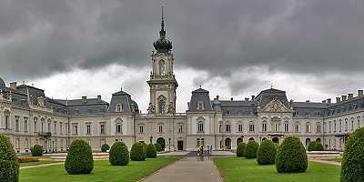
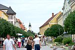
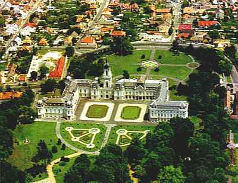
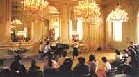
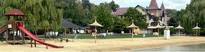
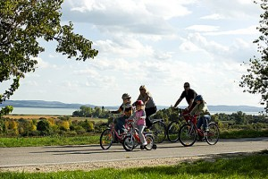

|
|
|
Keszthely am
Balaton
|
|
|
 |
Keszthely
ist
mit 23.000 Einwohnern die größte Stadt
am
Plattensee.
Keszthely
ist
ganzjährig ein
beliebter Kur- und
Erholungsort. Durch
seine Nähe zum Thermalkurort Hévíz und
direkt am Balaton gelegen,
bietet sich hier eine besonders reiche Auswahl an kulturellen und
Sportveranstaltungen an. Reiten ist vielerorts in der Umgebung
möglich. Auskunft erteilt Ihre Hotelrezeption. |
Keszthely ist die heimliche Hauptstadt des
Balatons (Plattensee). Zwischen dem Nordwest-Ufer und dem
gleichnamigen Bergland eingebettet, ist es eine Stadt mit
Spuren, die weit in die Geschichte zurückreichen. Besiedelt
wurde dieses Gebiet schon von den Römern und die erste
schriftliche Erwähnung der Stadt stammt aus dem Jahr 1247.
Die glücklichste Zeit Keszthelys liegt im 18. und 19.
Jahrhundert. Untrennbar verbunden mit dem entstehendem Glanz
und zunehmendem Wohlstand in dieser Epoche ist das
Fürstengeschlecht der Festetics. 1739 erwirbt Kristóf
Festetics einen Landsitz und baut ihn zwei Jahre später zu
einem märchenhaften Schloss um. Mehrere Generationen der
Familie Festetics sorgten für den Ausbau der Gemeinde zu
einem Kurort, direkt benachbart mit dem berühmten Thermalsee
in Bad Hévíz. |
Das Städtchen an
der Nordwestspitze
des
Balatons ist die
größte
und älteste
Siedlung am Balaton und war schon
in
der Römerzeit ein wichtiges Handelszentrum. Überreste
des damaligen
Castrums von Valcum befinden sich bei Fenékpuszta.
Auf dem Hauptplatz im Zentrum
steht die
gotische Pfarrkirche aus dem 14. Jh. mit schönen Fresken und
Rosenfenster.
|
|

|
Einige
direkte Buslinien fahren in wenigen Minuten vom Busbahnhof (direkt am
Eisenbahn-Bahnhof) nach Bad Hévíz zum
berühmten Thermalsee. Dort
haben Sie die Qual der Wahl unter zahlreichen Kurbetrieben. Hévíz
ist allerdings ziemlich
überfüllt von deutschsprachigen
Touristen. Kurärzte und
Optiker gibt es auch
in Keszthely und auch hier werden allerlei Kurbehandlungen
angeboten. |

|
Ein
Aufenthalt im Barockstädtchen Keszthely ist daher die preiswerte, trotzdem anspruchsvolle
Alternative zur
Kur in Bad
Hévíz.
Nur 400
m entfent vom großen Strand und 200 m vom
Stadtzentrum entfernt bieten wir gut ausgestattete Ferienapartments im
Clubhotel
Abbázia für 2, 4 oder auch für 6
Personen. Die
Apartments befinden sich in sieben zueinander nahe liegenden
Häusern, in einem Umkreis von 200 Metern in
verkehrsberuhigter Gegend
im Stadtzentrum.
|
Das Barockschloss Festetics
(Kastély utca 1)
war in der roten Ära verstaatlicht, herunter-gewirtschaftet
und
gleich nach der Wende in sechsjähriger Arbeit für rd.
2 Millionen Euro renoviert
worden.
Die Grafen Festetics haben
wesentlich dazu
beigetragen, dass Deutschland nicht schon vor vier
Jahrhunderten von den Türken überrannt
wurde. György Festetics
gründete
weltweit die erste
Hochschule für Landwirtschaft (Georgikon utca
20). Seiner Unterstützung vor mehr als Zweihundert Jahren ist
es zu verdanken, dass Bad Hévíz heute
als weltweit bekannter Badekurort internationale Anerkennung
findet. |
 |
Besuchenswert ist die
landesweit
bekannte Helikon-Bibliothek im Schloss.
Sie beherbergt rd. 50
Tausend Bücher in einem sehenswerten
hölzernen
Interieur,
allerlei Säle mit schön geschnitzten klassizistischen
Möbeln und einen
Hof, in dem zur Sommerzeit Sinfonien gespielt werden. Es ist eines
der schönsten Barockschlösser in Europa und das
drittgrößte Schloss
in Ungarn.
|
Anfang
2004 wurde das Kutschenmuseum im
Kutschenhaus des Festetics-Schlosses
eröffnet. Mehr als
50
Fahrzeuge haben auf der 1.000 Quadratmeter großen
Ausstellungsfläche ein neues Domizil gefunden.
|
|
Im
Balaton-Museum (Múzeum utca 2) erfährt man alles
über den
Balaton: Archeologisch und ethnologisch wichtige Relikte, über
die
Schifffahrt, Geschichte der Badeorte, Fauna und Flora. Für
speziell
dafür Interessierte sind das Puppenmuseum
(Kossuth
Lajos utca
11, Fußgängermeile) und das Marzipanmuseum (Katona
József utca 19) von
Bedeutung. Weinmuseen gibt es in mehreren Restaurants im
Stadtzentrum.
|
|
| |
|
|
|
Veranstaltungen in Keszthely |
|
|
BALATON
FESTIVAL 01. - 31. Mai - Im Vordergrund
dieses Festivals stehen vor allem Konzerte der klassischen Musik und
Ausstellungen der bildenden Künste, aber auch Jazz, Ragtime,
Dixieland
sowie Auftritte der Straßenmusiker. Ebenso können
Vorstellungen der
Straßentheater bestaunt werden. |
Die Veranstaltungsreihe
beginnt mit der
feierlichen Saisoneröffnung am Balaton und endet mit dem
Gesellschaftstanz-Wettbewerb. Neben einer Serie von Programmen
verschiedener Kammerorchester mit dem Titel "Abende im Rathaus"
können
die Besucher an verschiedenen Freilicht- und Sportveranstaltungen
teilnehmen.
|
WEINFEST -
ZALAER
WEINKRANZ bzw. "Keszthelyi Borcégér"
Da
die Veranstalter sich offensichtlich nicht einigen können, läuft das
Weinfest alle paar Jahre unter einem neuen Namen, jährlich seit 1993
- Ende Juli / Mittwoch bis
Sonntag - Das Problem mit dem Termin ergibt sich aus der nahe gelegenen
Konkurenz vieler benachbarter Weinorte um den berühmten
Badacsonyberg herum.
Eröffnung
mit Parademarsch, Weinverkostung,
Handwerkermarkt, kulinarische
Speisen, Kinderprogramme, Tanz- und Musikdarbietungen, Konzerte
.
Im
Schatten großer Platanenbäume am
Balatonufer bieten 15
Weinkellereien aus der
Gegend ihre Produkte an.
|
| Besuchenswerte
Objekte in Keszthely: |
- Schloss Festetics,
- Puppenmuseum,
- Schneckenparlament,
- Panoptikum.
|
KONZERTE finden im Spiegelsaal des
pompösen
Barockschlosses Festetics jährlich
von Februar bis
November, donnerstags und sonntags um 20 Uhr statt und es gibt jedes
Jahr ein.
|
|
 |
Weihnachtskonzert
- alljährlich am 28. Dezember
Neujahrskonzert
- alljährlich am 1. Januar |
Die
Gäste
werden im
wunderschönen Spiegelsaal
des barocken Schlosses mit besonderen Konzertveranstaltungen erwartet,
wo man sich an den bekanntesten Melodien aus der Welt der Operette
erfreuen kann. Im Konzert mit dem Titel "Walzertraum" werden
Sie vom
Wirbel der Walzer mitgerissen. Mitwirkende sind bekannte ungarische und
ausländische Künstler. |
|
| |
|
Bademöglichkeiten
|
|
 |
|
|
- Balaton
mit viel Feinsand am
langem seichten
Strand - ideal für Familien,
- Kajak-,
Kanu-, Tret- und
Ruderbootsverleih,
- Thermalsee
in Bad
Hévíz ca. 4
km,
- Thermal-
und Wellnessbad
in Kehida ca. 15 km,
- Thermal-
und Wellnessbad in
Zalakaros ca. 25 km
|
|
| |
|
Mit dem Fahrrad um den
Balaton |
| Seit der Jahrtausendwende
führt ein autofreier
Fahrradweg um den
gesamten Plattensee herum. Er ist 204 km lang,
berührt alle Balaton-Orte, sodass man die Fahrt in
beiden Richtungen allerorts anfangen, unterbrechen und je nach Lust und
Laune fortsetzen kann. |
 |
|
| |
|
Geführte
Ausflüge mit Bus |
| |
- Nationalpark
"Kis-Balaton" allg. Führungen,
- Vogelreservat
im Nationalpark "Kis-Balaton",
- Büffelreservat
im Nationalpark "Kis-Balaton",
- Höhlensee
in Tapolca
ca. 20 kmBudapest
ca. 180 km,
- PécsHerend
(Porzellanmanufaktur),
- Tihany
(Balaton Halbinsel)
|
| |
|
|
| |
|
| |
|
Ungarn-Tourist Team

|
| |
| |
|


{kind=link}